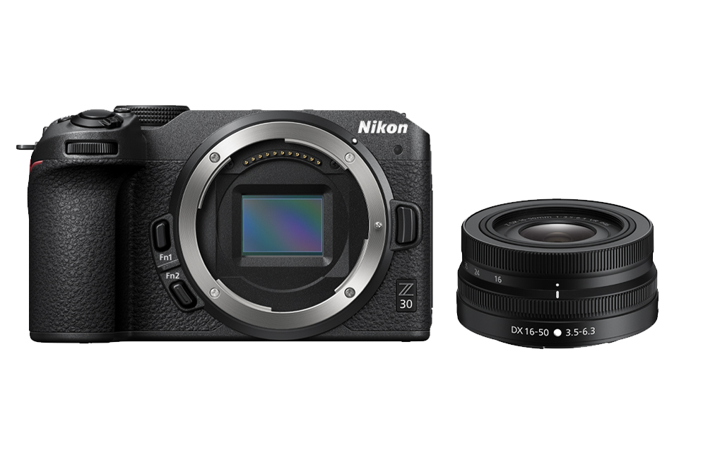

Chi tiết Nikon Z30

Nikon Z30
16.490.000đ
Nikon Z30 là máy ảnh không gương lật nhỏ gọn, phù hợp chụp ảnh hằng ngày và quay vlog. Máy có màn hình xoay lật, micro stereo và đèn báo quay video.
Đặc điểm nổi bật
- Cảm biến DX CMOS 20.9 megapixel.
- Hệ thống lấy nét Hybrid AF với 209 điểm.
- Quay video 4K UHD 30p và Full HD 120p.
- Kết nối Wi-Fi và Bluetooth với điện thoại.
Thông số kỹ thuật
| Loại máy | Máy ảnh không gương lật |
|---|---|
| Ngàm ống kính | Nikon Z |
| Cảm biến | DX CMOS 20.9 megapixel |
| Lấy nét | Hybrid AF, 209 điểm lấy nét |
| Chụp liên tục | Tối đa khoảng 11 hình/giây |
| Quay video | 4K UHD 30p, Full HD 120p |
| ISO | 100 - 51.200, có thể mở rộng đến 204.800 |
| Màn hình | Cảm ứng xoay lật 3 inch, khoảng 1.04 triệu điểm ảnh |
| Chống rung | Chống rung trên ống kính và chống rung điện tử khi quay phim |
| Thẻ nhớ | SD, SDHC, SDXC, hỗ trợ UHS-I |
| Kết nối | USB Type-C, HDMI micro, cổng micro 3.5 mm, Wi-Fi và Bluetooth |
| Pin | EN-EL25, khoảng 330 ảnh |
| Trọng lượng | Khoảng 405 g gồm pin và thẻ nhớ |